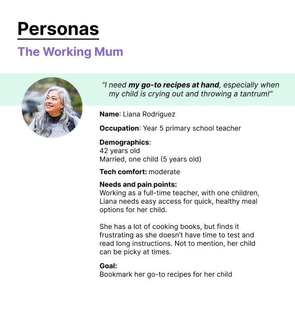
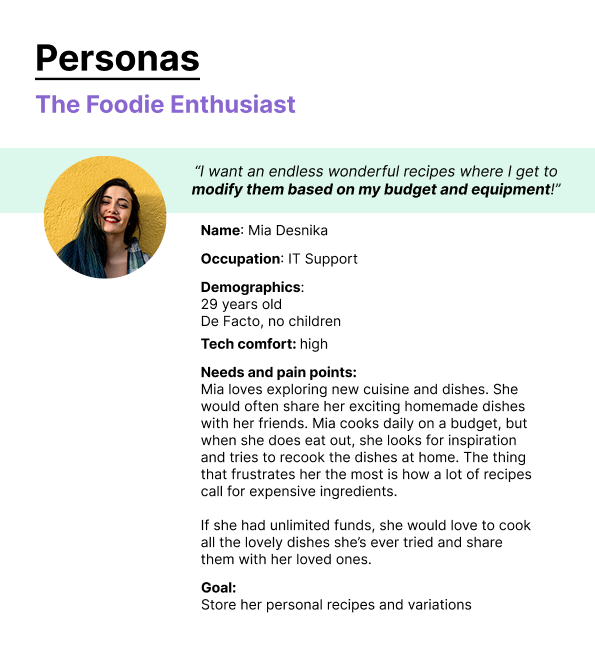
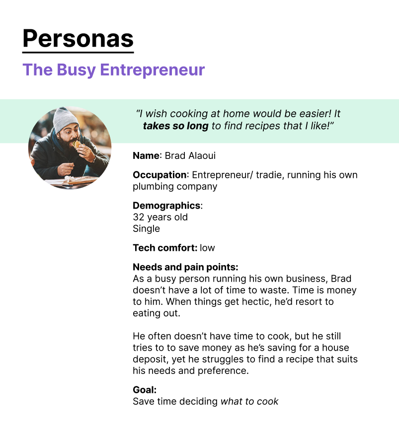
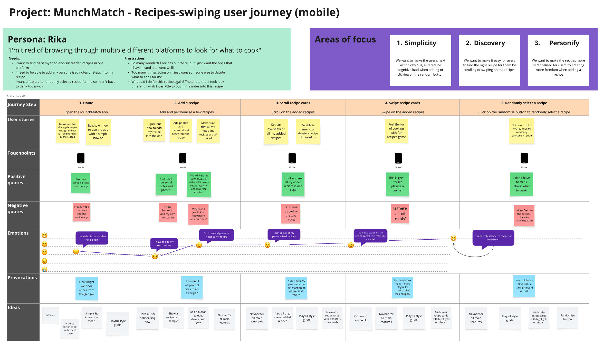
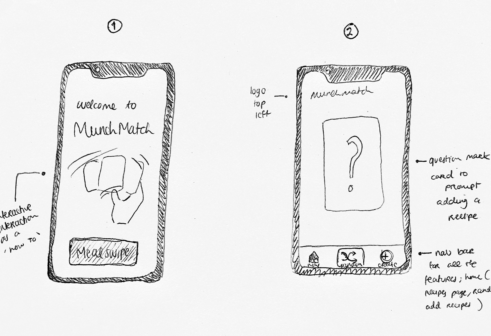
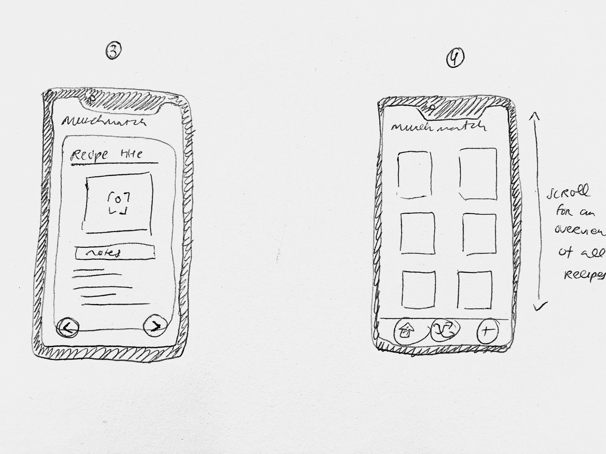

Some of my personal explorations and professional work, created with curious minds.
05
"This is my invariable advice to people:
Learn how to cook, try new recipes, learn from your mistakes, be fearless,
and above all have fun!"
- Julia Child
How to reduce decision paralysis and simplify meal planning and make it fun
“How might we help home cooks decide what to cook with less cognitive effort and stress?”
Initial discussion
The project starts with me, as the main homecook in the house, where I use my pain points of always having to decide on what to cook and do meal prep planning as the main drive for the app.
Secondary research
We looked at successful recipe apps, in particular Cookpad, Japan’s largest recipe-sharing network app, that I’ve been using to browse for Indonesian recipes.
What I like about Cookpad:
- Simplicity of the app and its user-generated recipes. I can browse recipes based on what ingredients I have and bookmark them
- I can see which recipes are of high quality based on the amount of cooksnaps
What Cookpad is successful in, according to other users and researchers:
- Very little instruction or copy involved, but the focus is on slick search and discoverable user-generated content. Users can find recipes by searching via meal type or by specific ingredients (econsultancy, 2018)
- Recommended searches and top 10 searches add to the community-feel of the platform
- Write a recipe button is at the front and centre; nice prompt
- Cookpad doesn’t only allow written reviews, but cooksnaps; a social proof
Secondary discussion
After discussions, Charlie and I started that instead of focusing on a specific interface feature, the big question needs to be reframed that reflect my main pain point on the cognitive effort and time, such as:
- Spending a long time to browse online for recipes and go through bookmarked recipes on multiple tabs or different platforms
“How might a swiping-based interface reduce decision paralysis and help homecookers plan meals with less cognitive effort and stress?”



As a user, I can:
- Scroll/swipe through successful recipes (aka recipes i have tried and works really well for me in the past)
- Create a list of recipes
- Add recipe variation notes so i can remember the different ways i have cooked a recipe, and make the recipes more personalised
- Attach my photos to recipes (take photos directly in the app or upload them from my gallery)
- Go to a home screen that reminds me how to use the app
- Press a randomise button to get a random recipe, to save on time and avoid decision paralysis

1. Swiping interface of all recipe cards
2. Randomise feature for the recipe cards
3. Add a recipe card with a note and photo section
Main elements for logo: the letter M, and a bite mark.
For more information, see Project #06
Manual hand-sketches for the screens prototype

